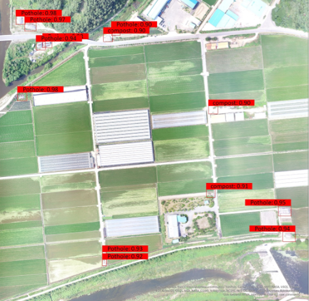
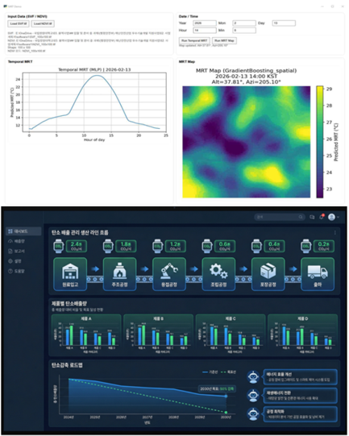
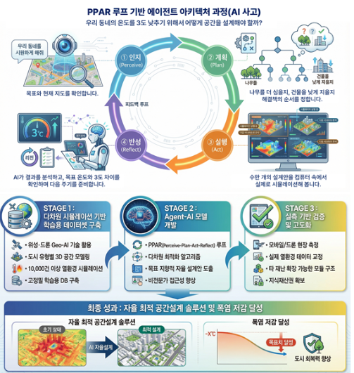
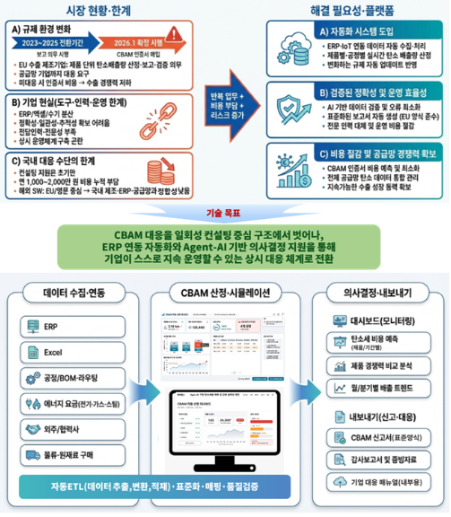

공간정보융합연구실의 연구 성과로 출발한 창업기업을 소개합니다.
엔비랩스는 공간정보(위성, 드론, GIS)와 인공지능을 융합하여 기후 위기 대응을 위한 환경 솔루션과 기업 탄소배출 관리 솔루션을 제공합니다.
ENVILABS 홈페이지 바로가기 →Business Areas
위성 및 드론 원격탐사를 통해 확보한 고해상도 데이터를 AI와 융합하여 정밀한 환경 공간정보를 구축합니다. 환경·기후재난 요소를 자동 탐지하는 차세대 모니터링 솔루션을 제공합니다.

지능형 공간정보(Geo-AI)와 정밀 모델링 기법을 도입하여 미래 환경·기후재난 변화를 과학적으로 예측합니다. 미세먼지, 도시 열쾌적성, 수질오염 등을 시뮬레이션하여 기후 위기 대응의 핵심 근거를 제시합니다.

공간정보와 Agent AI를 결합한 디지털 트윈 기술을 활용하여 가상공간 내 환경·기후재난 개선 시나리오를 검토합니다. 최적의 공간설계 방안을 자동 도출하여 설계비용을 감축하고 개선 효과를 증가시킵니다.

CBAM 대응과 LCA 등 기업의 탄소배출 관리를 위해 AI를 활용한 배출량 자동 산정·예측 및 감축 전략 수립 솔루션을 제공합니다. ERP 연동 기반 SaaS 플랫폼으로 중소 제조기업의 탄소 규제 대응을 지원합니다.

공간정보·AI 기술 기반의 환경 전문가 양성을 위한 교육 프로그램을 운영합니다. GIS 분석, 드론 운용 및 영상 처리, 탄소배출 관리 등 기술적 노하우를 전파하여 미래 지향적인 전문 인력을 육성합니다.